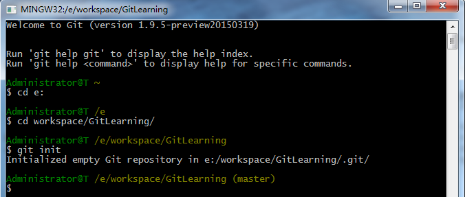
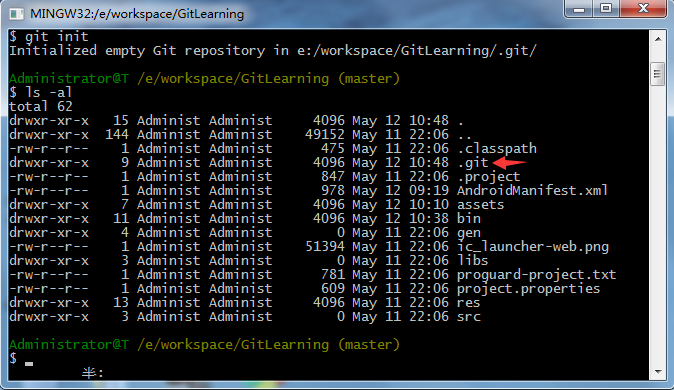

上一章我们已经安装好了Git程序，下面我们研究一下代码仓库的创建。
仓库是用于保存版本管理所需信息的地方，所有本地提交的代码都会被提交到代码仓库中，如果有需要还可以再推送到远程仓库中。
下面我们以本系统开发为例，具体介绍一下如何创建一个代码仓库。
首先进入本项目的目录下面，然后再这个目录下面输入如下命令：
git init
是不是相当之简单呀，只需一行代码即可！
仓库创建完成后，会在本项目的根目录下生成一个隐藏的.git文件夹，这个文件夹就是用来记录本地所有的Git操作的，可以在本目录下使用ls -al命令来查看一下，如下图：
如果你想删除本地仓库，只需删除这个文件夹就可以了！